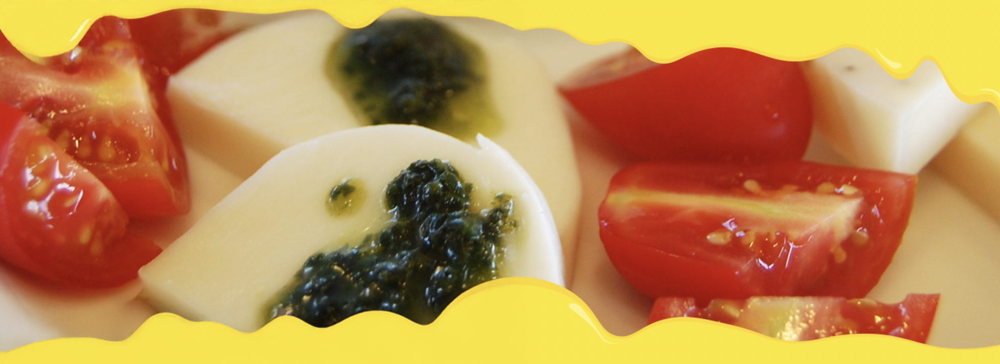

ABOUT


チーズアカデミーは、チーズ職人養成学校です
チーズの素晴らしさを、自給自足を通じてできるだけ多くの人に知っていただきたい。そして、食卓にはいつもチーズがあった「あの頃の当たり前」をこの手で取り戻したい。そんな思いから、チーズ職人養成学校「チーズアカデミーTOKYO」は歩みを始めています。卒業後、チーズ自給自足のバックアップはもちろんのこと、チーズ職人への就職・転職もサポートします。

本格的な農園を使った実地研修
チーズアカデミーでは、本格的な農園を使った実地研修を行うことができます。 プロとして活躍するチーズ職人も使用するような、広大で環境も整った農園を余すところなく使い、 卒業時には本格的なチーズを自分の力で作れる実践力の養成を目指します。

必要な知識もしっかりと取得
チーズ作りには、しっかりとした食に関する知識が欠かせません。 チーズアカデミーでは、一流講師陣によるチーズ作りに必要ないろはを余すところなく学べます。 チーズそのものでなく、栄養学全般を学ぶことも可能ですので、 チーズ以外への展開も夢ではないでしょう。

卒業制作はティスティング審査あり
チーズアカデミーでは最後の2ヶ月間で卒業制作を実施。 卒業制作としてチーズ作りを実際に行います。 卒業後、一般参加によるティスティング審査があるため、 作り手の目線だけでなく、消費者の目線から卒業制作作品としてのチーズを評価いただくことができます。
COURSE
未経験からでもスタートができるよう、カリキュラムは多くの専門家や 現役チーズ職人のアドバイスのもと、作られました。
NEWS
-

2016/11/18
チーズアカデミー卒業生のコスゲさんによる、チーズだけをふんだんに使用した話題のピザ屋「Kosuge Pizza」が渋谷でオープンしました！
-
2016/11/18
チーズアカデミー卒業生のコスゲさんによる、チーズだけをふんだんに使用した話題のピザ屋「Kosuge Pizza」が渋谷でオープンしました！
-
2016/11/18
チーズアカデミー卒業生のコスゲさんによる、チーズだけをふんだんに使用した話題のピザ屋「Kosuge Pizza」が渋谷でオープンしました！
チーズアカデミーTOKYO
〒107-0061
東京都港区北青山3-5-6 青朋ビル2FTEL 03-5413-5045
FAX 03-5413-5046
MAIL dummy@cheeseacademy.tokyo